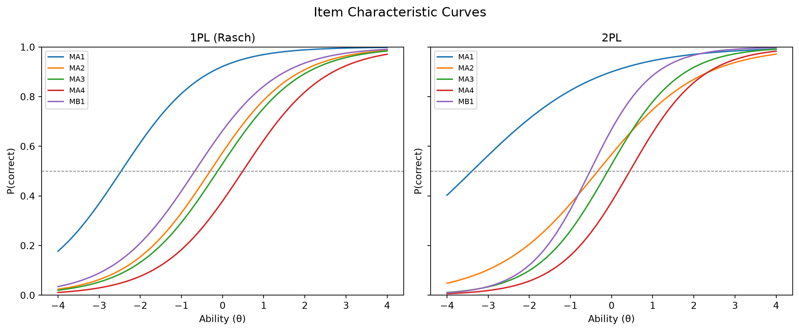
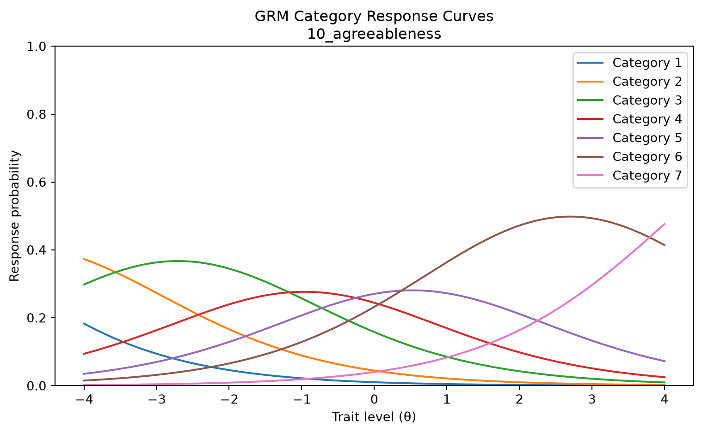

# pip install --upgrade setuptools
# pip install "git+https://github.com/itemresponsewarehouse/Python-pkg.git"
# pip install mirt girth scipy matplotlibEstimating IRT Models in Python
A step-by-step introduction to importing IRW data in Python and fitting standard IRT models (1PL, 2PL, 3PL, and graded response) using the mirt and girth packages.
This vignette walks through a complete Python workflow for working with IRW data: fetching a dataset, preparing it for IRT estimation, fitting the 1PL (Rasch), 2PL, and 3PL models for dichotomous responses, and the graded response model (GRM) for polytomous data. We use the irw package for data access, mirt for dichotomous estimation, and girth for the GRM.
Setup
Install required packages
Load libraries
import numpy as np
import pandas as pd
import matplotlib.pyplot as plt
import irw
from mirt import fit_mirt
from girth import grm_mml, tag_missing_data, INVALID_RESPONSEPart 1: Dichotomous IRT (1PL, 2PL, 3PL)
Fetch a dataset
We start with 4thgrade_math_sirt, a dichotomous cognitive dataset from the IRW containing math item responses from fourth-grade students. On first use, irw.fetch() will open a browser window prompting you to authenticate with your Redivis account.
df = irw.fetch("4thgrade_math_sirt")
print(df.head())
print(f"\nShape: {df.shape}")
print(f"Columns: {df.columns.tolist()}")Warning: Setting the REDIVIS_API_TOKEN for interactive sessions is deprecated and highly discouraged.
Please delete the token on Redivis and remove it from your code, and follow the authentication prompts here instead.
This environment variable should only ever be set in a non-interactive environment, such as in an automated script or service.
Warning: Setting the REDIVIS_API_TOKEN for interactive sessions is deprecated and highly discouraged.
Please delete the token on Redivis and remove it from your code, and follow the authentication prompts here instead.
This environment variable should only ever be set in a non-interactive environment, such as in an automated script or service.
Warning: Setting the REDIVIS_API_TOKEN for interactive sessions is deprecated and highly discouraged.
Please delete the token on Redivis and remove it from your code, and follow the authentication prompts here instead.
This environment variable should only ever be set in a non-interactive environment, such as in an automated script or service.
Warning: Setting the REDIVIS_API_TOKEN for interactive sessions is deprecated and highly discouraged.
Please delete the token on Redivis and remove it from your code, and follow the authentication prompts here instead.
This environment variable should only ever be set in a non-interactive environment, such as in an automated script or service.
Warning: Setting the REDIVIS_API_TOKEN for interactive sessions is deprecated and highly discouraged.
Please delete the token on Redivis and remove it from your code, and follow the authentication prompts here instead.
This environment variable should only ever be set in a non-interactive environment, such as in an automated script or service.
Warning: Setting the REDIVIS_API_TOKEN for interactive sessions is deprecated and highly discouraged.
Please delete the token on Redivis and remove it from your code, and follow the authentication prompts here instead.
This environment variable should only ever be set in a non-interactive environment, such as in an automated script or service.
Warning: Setting the REDIVIS_API_TOKEN for interactive sessions is deprecated and highly discouraged.
Please delete the token on Redivis and remove it from your code, and follow the authentication prompts here instead.
This environment variable should only ever be set in a non-interactive environment, such as in an automated script or service.
Warning: Setting the REDIVIS_API_TOKEN for interactive sessions is deprecated and highly discouraged.
Please delete the token on Redivis and remove it from your code, and follow the authentication prompts here instead.
This environment variable should only ever be set in a non-interactive environment, such as in an automated script or service.
Warning: Setting the REDIVIS_API_TOKEN for interactive sessions is deprecated and highly discouraged.
Please delete the token on Redivis and remove it from your code, and follow the authentication prompts here instead.
This environment variable should only ever be set in a non-interactive environment, such as in an automated script or service.
Warning: Setting the REDIVIS_API_TOKEN for interactive sessions is deprecated and highly discouraged.
Please delete the token on Redivis and remove it from your code, and follow the authentication prompts here instead.
This environment variable should only ever be set in a non-interactive environment, such as in an automated script or service.
Warning: Setting the REDIVIS_API_TOKEN for interactive sessions is deprecated and highly discouraged.
Please delete the token on Redivis and remove it from your code, and follow the authentication prompts here instead.
This environment variable should only ever be set in a non-interactive environment, such as in an automated script or service.
Warning: Setting the REDIVIS_API_TOKEN for interactive sessions is deprecated and highly discouraged.
Please delete the token on Redivis and remove it from your code, and follow the authentication prompts here instead.
This environment variable should only ever be set in a non-interactive environment, such as in an automated script or service.
Warning: Setting the REDIVIS_API_TOKEN for interactive sessions is deprecated and highly discouraged.
Please delete the token on Redivis and remove it from your code, and follow the authentication prompts here instead.
This environment variable should only ever be set in a non-interactive environment, such as in an automated script or service.
item id resp testlet domain subdomain
0 MA1 125 0 MA arithmetic addition
1 MA1 653 0 MA arithmetic addition
2 MA1 483 0 MA arithmetic addition
3 MA1 609 0 MA arithmetic addition
4 MA1 412 0 MA arithmetic addition
Shape: (19920, 6)
Columns: ['item', 'id', 'resp', 'testlet', 'domain', 'subdomain']IRW data is in long format: one row per person–item response. The key columns are:
id— respondent identifieritem— item identifierresp— response value (0/1 for dichotomous items)
Prepare the response matrix
mirt expects a wide integer array of shape (n_persons, n_items) with missing responses coded as -1. We use irw.long2resp() to reshape from long to wide, then convert.
# Reshape from long to wide (persons × items)
resp_wide = irw.long2resp(df)
resp_wide = resp_wide.drop(columns="id", errors="ignore")
# Convert to numeric; encode missing as -1
resp_arr = resp_wide.apply(pd.to_numeric, errors="coerce").to_numpy(dtype=float, na_value=np.nan)
n_persons, n_items = resp_arr.shape
print(f"Persons: {n_persons}, Items: {n_items}")
print(f"Overall proportion correct: {np.nanmean(resp_arr):.3f}")
resp_matrix = np.where(np.isnan(resp_arr), -1, resp_arr).astype(int)Persons: 664, Items: 30
Overall proportion correct: 0.510Fit the 1PL (Rasch) model
The 1PL constrains all items to share a common discrimination, estimating only item difficulties (the b parameters). fit_mirt uses marginal maximum likelihood via expectation-maximisation (EM).
item_names = resp_wide.columns.tolist()
fit_1pl = fit_mirt(resp_matrix, model="1PL", item_names=item_names)
print(fit_1pl.summary())================================================================================
IRT Model Results
================================================================================
Model: 1PL Log-Likelihood: -11374.7834
No. Items: 30 AIC: 22869.5667
No. Factors: 1 BIC: 23139.4637
No. Persons: 664 No. Parameters: 60
Converged: True Iterations: 25
--------------------------------------------------------------------------------
discrimination:
Item Estimate Std.Err z-value P>|z| [95% CI]
--------------------------------------------------------------------------------
MA1 1.0000 0.0000 nan nan nan nan
MA2 1.0000 0.0000 nan nan nan nan
MA3 1.0000 0.0000 nan nan nan nan
MA4 1.0000 0.0000 nan nan nan nan
MB1 1.0000 0.0000 nan nan nan nan
MB2 1.0000 0.0000 nan nan nan nan
MB3 1.0000 0.0000 nan nan nan nan
MB4 1.0000 0.0000 nan nan nan nan
MC1 1.0000 0.0000 nan nan nan nan
MC2 1.0000 0.0000 nan nan nan nan
MC3 1.0000 0.0000 nan nan nan nan
MC4 1.0000 0.0000 nan nan nan nan
MD1 1.0000 0.0000 nan nan nan nan
MD2 1.0000 0.0000 nan nan nan nan
MD3 1.0000 0.0000 nan nan nan nan
MD4 1.0000 0.0000 nan nan nan nan
ME1 1.0000 0.0000 nan nan nan nan
ME2 1.0000 0.0000 nan nan nan nan
MF1 1.0000 0.0000 nan nan nan nan
MG1 1.0000 0.0000 nan nan nan nan
MG2 1.0000 0.0000 nan nan nan nan
MG3 1.0000 0.0000 nan nan nan nan
MG4 1.0000 0.0000 nan nan nan nan
MH1 1.0000 0.0000 nan nan nan nan
MH2 1.0000 0.0000 nan nan nan nan
MH3 1.0000 0.0000 nan nan nan nan
MH4 1.0000 0.0000 nan nan nan nan
MI1 1.0000 0.0000 nan nan nan nan
MI2 1.0000 0.0000 nan nan nan nan
MI3 1.0000 0.0000 nan nan nan nan
difficulty:
Item Estimate Std.Err z-value P>|z| [95% CI]
--------------------------------------------------------------------------------
MA1 -2.4661 0.1303 -18.927 0.0000 -2.7215 -2.2107
MA2 -0.3018 0.0872 -3.459 0.0005 -0.4727 -0.1308
MA3 -0.1204 0.0867 -1.389 0.1649 -0.2903 0.0495
MA4 0.4914 0.0879 5.590 0.0000 0.3191 0.6636
MB1 -0.6759 0.0896 -7.540 0.0000 -0.8516 -0.5002
MB2 -0.5803 0.0889 -6.531 0.0000 -0.7545 -0.4062
MB3 0.7758 0.0901 8.612 0.0000 0.5993 0.9524
MB4 0.7596 0.0899 8.447 0.0000 0.5834 0.9359
MC1 -1.4587 0.1008 -14.476 0.0000 -1.6562 -1.2612
MC2 0.1046 0.0866 1.207 0.2272 -0.0652 0.2743
MC3 -0.8311 0.0912 -9.116 0.0000 -1.0098 -0.6524
MC4 -0.2638 0.0871 -3.029 0.0025 -0.4345 -0.0931
MD1 -0.9406 0.0924 -10.175 0.0000 -1.1218 -0.7594
MD2 -1.3494 0.0987 -13.674 0.0000 -1.5428 -1.1560
MD3 -0.5175 0.0884 -5.853 0.0000 -0.6907 -0.3442
MD4 -0.5253 0.0885 -5.938 0.0000 -0.6987 -0.3519
ME1 -1.0271 0.0936 -10.978 0.0000 -1.2105 -0.8437
ME2 0.5456 0.0882 6.184 0.0000 0.3727 0.7186
MF1 -0.3323 0.0874 -3.803 0.0001 -0.5035 -0.1610
MG1 0.4068 0.0875 4.652 0.0000 0.2354 0.5782
MG2 0.8166 0.0905 9.024 0.0000 0.6392 0.9940
MG3 0.3306 0.0871 3.795 0.0001 0.1599 0.5014
MG4 0.4914 0.0879 5.590 0.0000 0.3191 0.6636
MH1 0.0221 0.0866 0.256 0.7983 -0.1475 0.1918
MH2 0.6635 0.0891 7.447 0.0000 0.4889 0.8381
MH3 0.3839 0.0873 4.395 0.0000 0.2127 0.5551
MH4 0.8660 0.0910 9.515 0.0000 0.6876 1.0444
MI1 0.8826 0.0912 9.679 0.0000 0.7039 1.0613
MI2 0.1947 0.0867 2.245 0.0248 0.0247 0.3647
MI3 1.7152 0.1057 16.222 0.0000 1.5079 1.9224
================================================================================Fit the 2PL model
The 2PL additionally estimates a discrimination parameter (a) for each item, allowing items to differ in how sharply they separate high- and low-ability respondents.
fit_2pl = fit_mirt(resp_matrix, model="2PL", item_names=item_names)
summary_2pl = pd.DataFrame({
"discrimination": fit_2pl.model.discrimination.round(3),
"difficulty": fit_2pl.model.difficulty.round(3),
}, index=item_names)
print(summary_2pl.to_string()) discrimination difficulty
MA1 0.648 -3.393
MA2 0.813 -0.335
MA3 1.155 -0.093
MA4 1.149 0.442
MB1 1.340 -0.523
MB2 1.091 -0.517
MB3 1.559 0.581
MB4 1.657 0.553
MC1 1.147 -1.276
MC2 1.177 0.103
MC3 1.123 -0.731
MC4 1.313 -0.197
MD1 1.400 -0.715
MD2 1.253 -1.111
MD3 1.385 -0.388
MD4 1.164 -0.445
ME1 1.232 -0.851
ME2 1.252 0.465
MF1 1.185 -0.273
MG1 2.108 0.281
MG2 2.352 0.515
MG3 2.223 0.230
MG4 2.302 0.324
MH1 0.609 0.031
MH2 0.858 0.724
MH3 0.800 0.443
MH4 0.792 1.003
MI1 0.486 1.545
MI2 0.731 0.242
MI3 0.828 1.923Fit the 3PL model
The 3PL adds a lower asymptote (c, the “guessing”) parameter per item. This is appropriate when chance-level correct responding is plausible (e.g., multiple-choice exams).
fit_3pl = fit_mirt(resp_matrix, model="3PL", item_names=item_names)
summary_3pl = pd.DataFrame({
"discrimination": fit_3pl.model.discrimination.round(3),
"difficulty": fit_3pl.model.difficulty.round(3),
"guessing": fit_3pl.model.guessing.round(3),
}, index=item_names)
print(summary_3pl.to_string()) discrimination difficulty guessing
MA1 0.824 -1.661 0.500
MA2 0.832 -0.334 0.000
MA3 1.150 -0.095 0.000
MA4 1.159 0.435 0.000
MB1 1.345 -0.522 0.000
MB2 1.087 -0.521 0.000
MB3 1.587 0.572 0.000
MB4 1.693 0.544 0.000
MC1 1.130 -1.294 0.000
MC2 1.178 0.100 0.000
MC3 1.146 -0.722 0.000
MC4 1.321 -0.197 0.000
MD1 1.416 -0.711 0.000
MD2 1.267 -1.106 0.000
MD3 1.405 -0.384 0.000
MD4 1.168 -0.445 0.000
ME1 1.214 -0.861 0.000
ME2 1.262 0.459 0.000
MF1 1.178 -0.276 0.000
MG1 2.165 0.298 0.009
MG2 2.353 0.514 0.000
MG3 2.563 0.278 0.030
MG4 2.335 0.326 0.000
MH1 2.180 0.925 0.347
MH2 2.085 0.997 0.197
MH3 1.853 0.876 0.225
MH4 1.757 1.145 0.164
MI1 1.565 1.671 0.233
MI2 0.744 0.299 0.020
MI3 1.859 1.644 0.100Plot item characteristic curves (ICCs)
Visualizing ICCs gives an intuitive view of how each item functions. Here we compare a selection of items across the 1PL and 2PL.
theta_range = np.linspace(-4, 4, 200)
def icc_1pl(theta, b):
return 1 / (1 + np.exp(-(theta - b)))
def icc_2pl(theta, a, b):
return 1 / (1 + np.exp(-a * (theta - b)))
difficulty_1pl = fit_1pl.model.difficulty
discrimination_2pl = fit_2pl.model.discrimination
difficulty_2pl = fit_2pl.model.difficulty
fig, axes = plt.subplots(1, 2, figsize=(12, 5), sharey=True)
for idx, name in zip(range(5), item_names[:5]):
axes[0].plot(theta_range, icc_1pl(theta_range, difficulty_1pl[idx]), label=name)
axes[1].plot(theta_range, icc_2pl(theta_range, discrimination_2pl[idx], difficulty_2pl[idx]), label=name)
for ax, title in zip(axes, ["1PL (Rasch)", "2PL"]):
ax.set_title(title)
ax.set_xlabel("Ability (θ)")
ax.set_ylabel("P(correct)")
ax.axhline(0.5, color="grey", linestyle="--", linewidth=0.8)
ax.legend(fontsize=8)
ax.set_ylim(0, 1)
fig.suptitle("Item Characteristic Curves", fontsize=14)
plt.tight_layout()
plt.show()
Part 2: Polytomous IRT (Graded Response Model)
The Graded Response Model (GRM) is appropriate for ordered polytomous items (e.g., Likert-scale survey responses). We use girth for the GRM, which has a stable MML implementation for polytomous models.
Fetch a polytomous dataset
df_poly = irw.fetch("5personalityfactors")
print(df_poly.head())
print(f"\nUnique response categories: {sorted(df_poly['resp'].dropna().unique())}")Warning: Setting the REDIVIS_API_TOKEN for interactive sessions is deprecated and highly discouraged.
Please delete the token on Redivis and remove it from your code, and follow the authentication prompts here instead.
This environment variable should only ever be set in a non-interactive environment, such as in an automated script or service.
Warning: Setting the REDIVIS_API_TOKEN for interactive sessions is deprecated and highly discouraged.
Please delete the token on Redivis and remove it from your code, and follow the authentication prompts here instead.
This environment variable should only ever be set in a non-interactive environment, such as in an automated script or service.
Warning: Setting the REDIVIS_API_TOKEN for interactive sessions is deprecated and highly discouraged.
Please delete the token on Redivis and remove it from your code, and follow the authentication prompts here instead.
This environment variable should only ever be set in a non-interactive environment, such as in an automated script or service.
Warning: Setting the REDIVIS_API_TOKEN for interactive sessions is deprecated and highly discouraged.
Please delete the token on Redivis and remove it from your code, and follow the authentication prompts here instead.
This environment variable should only ever be set in a non-interactive environment, such as in an automated script or service.
Warning: Setting the REDIVIS_API_TOKEN for interactive sessions is deprecated and highly discouraged.
Please delete the token on Redivis and remove it from your code, and follow the authentication prompts here instead.
This environment variable should only ever be set in a non-interactive environment, such as in an automated script or service.
Warning: Setting the REDIVIS_API_TOKEN for interactive sessions is deprecated and highly discouraged.
Please delete the token on Redivis and remove it from your code, and follow the authentication prompts here instead.
This environment variable should only ever be set in a non-interactive environment, such as in an automated script or service.
Warning: Setting the REDIVIS_API_TOKEN for interactive sessions is deprecated and highly discouraged.
Please delete the token on Redivis and remove it from your code, and follow the authentication prompts here instead.
This environment variable should only ever be set in a non-interactive environment, such as in an automated script or service.
Warning: Setting the REDIVIS_API_TOKEN for interactive sessions is deprecated and highly discouraged.
Please delete the token on Redivis and remove it from your code, and follow the authentication prompts here instead.
This environment variable should only ever be set in a non-interactive environment, such as in an automated script or service.
Warning: Setting the REDIVIS_API_TOKEN for interactive sessions is deprecated and highly discouraged.
Please delete the token on Redivis and remove it from your code, and follow the authentication prompts here instead.
This environment variable should only ever be set in a non-interactive environment, such as in an automated script or service.
Warning: Setting the REDIVIS_API_TOKEN for interactive sessions is deprecated and highly discouraged.
Please delete the token on Redivis and remove it from your code, and follow the authentication prompts here instead.
This environment variable should only ever be set in a non-interactive environment, such as in an automated script or service.
Warning: Setting the REDIVIS_API_TOKEN for interactive sessions is deprecated and highly discouraged.
Please delete the token on Redivis and remove it from your code, and follow the authentication prompts here instead.
This environment variable should only ever be set in a non-interactive environment, such as in an automated script or service.
Warning: Setting the REDIVIS_API_TOKEN for interactive sessions is deprecated and highly discouraged.
Please delete the token on Redivis and remove it from your code, and follow the authentication prompts here instead.
This environment variable should only ever be set in a non-interactive environment, such as in an automated script or service.
id item resp age
0 15111 10_agreeableness 1.0 18
1 21348 10_agreeableness 1.0 18
2 22571 10_agreeableness 1.0 18
3 30530 10_agreeableness 1.0 18
4 31443 10_agreeableness 1.0 18
Unique response categories: [1.0, 2.0, 3.0, 4.0, 5.0, 6.0, 7.0, nan]Prepare the response matrix
girth expects a (n_items, n_persons) integer array with categories coded starting from 0 and missing values encoded as INVALID_RESPONSE (girth’s sentinel, -99999). We shift the responses so the lowest observed category becomes 0, round any values produced by duplicate-response averaging, then transpose.
resp_wide_poly = irw.long2resp(df_poly)
resp_wide_poly = resp_wide_poly.drop(columns="id", errors="ignore")
# Convert to numeric; shift so minimum category = 0
resp_arr_poly = resp_wide_poly.apply(pd.to_numeric, errors="coerce").to_numpy(dtype=float, na_value=np.nan)
min_resp = int(np.nanmin(resp_arr_poly))
resp_arr_poly = resp_arr_poly - min_resp
n_categories = int(np.nanmax(resp_arr_poly)) + 1
print(f"Persons: {resp_arr_poly.shape[0]}, Items: {resp_arr_poly.shape[1]}, Categories: {n_categories}")
# Round averaged duplicates, encode missing as INVALID_RESPONSE, transpose to (items × persons)
resp_matrix_poly = np.where(np.isnan(resp_arr_poly),
INVALID_RESPONSE,
np.round(resp_arr_poly)).astype(int).T
resp_matrix_poly = tag_missing_data(resp_matrix_poly, list(range(n_categories)))Found 1260 responses across 1260 unique id-item pairs (0.2% of total).
Average responses per pair: 1.0.
Aggregating responses based on agg_method='mean'.
Persons: 8936, Items: 70, Categories: 7Fit the Graded Response Model
grm_results = grm_mml(resp_matrix_poly)
discrimination_grm = grm_results["Discrimination"]
thresholds_grm = grm_results["Difficulty"] # shape: (n_items, n_categories - 1)
# Display results for first 10 items
item_names_poly = resp_wide_poly.columns.tolist()
for i in range(min(10, len(item_names_poly))):
thresh_str = ", ".join([f"{t:.2f}" for t in thresholds_grm[i]])
print(
f"{item_names_poly[i]:30s} "
f"a = {discrimination_grm[i]:.3f} "
f"b = [{thresh_str}]"
)Warning: invalid value encountered in log
Warning: divide by zero encountered in log
10_agreeableness a = 0.769 b = [-5.95, -3.71, -1.70, -0.22, 1.28, 4.12]
10_conscientiousness a = 0.818 b = [-3.52, -1.11, 0.44, 1.68, 3.60, 5.91]
10_extraversion a = 1.044 b = [-4.44, -2.79, -1.31, -0.29, 0.90, 2.80]
10_neuroticism a = 0.778 b = [-4.01, -1.31, 0.24, 1.52, 3.55, 5.92]
10_openness a = 1.044 b = [-5.89, -3.18, -1.36, 0.17, 1.99, 4.41]
11_agreeableness a = 1.122 b = [-4.49, -2.78, -1.65, -0.66, 0.84, 2.88]
11_conscientiousness a = 1.152 b = [-4.91, -2.97, -1.57, -0.48, 0.92, 2.59]
11_extraversion a = 1.476 b = [-3.38, -2.13, -1.28, -0.52, 0.69, 2.26]
11_neuroticism a = 0.602 b = [-5.84, -2.51, -0.56, 1.10, 3.23, 5.90]
11_openness a = 1.024 b = [-5.94, -3.66, -1.94, -0.50, 1.19, 3.08]Plot category response curves (CRCs)
Category response curves show the probability of each response category as a function of ability. We plot CRCs for a single example item.
from scipy.special import expit
def grm_crc(theta, a, thresholds):
"""
GRM category response curves.
P(X=k|θ) = P*(X≥k|θ) − P*(X≥k+1|θ), where P*(X≥k|θ) = logistic(a*(θ−b_k)).
"""
cum_probs = np.array([expit(a * (t - theta)) for t in thresholds])
cum_probs = np.vstack([np.ones_like(theta), 1 - cum_probs, np.zeros_like(theta)])
return -np.diff(cum_probs, axis=0)
item_idx = 0
item_name = item_names_poly[item_idx]
a_item = discrimination_grm[item_idx]
b_item = thresholds_grm[item_idx]
crc = grm_crc(theta_range, a_item, b_item)
fig, ax = plt.subplots(figsize=(8, 5))
for k in range(crc.shape[0]):
ax.plot(theta_range, crc[k], label=f"Category {k + 1}")
ax.set_title(f"GRM Category Response Curves\n{item_name}")
ax.set_xlabel("Trait level (θ)")
ax.set_ylabel("Response probability")
ax.legend()
ax.set_ylim(0, 1)
plt.tight_layout()
plt.show()
Summary
The table below recaps the models covered and when to use each one.
| Model | Package | Response type | Parameters per item | Use when |
|---|---|---|---|---|
| 1PL (Rasch) | mirt |
Dichotomous | difficulty b |
Equal discrimination is theoretically warranted |
| 2PL | mirt |
Dichotomous | a, b |
Items vary in how well they discriminate |
| 3PL | mirt |
Dichotomous | a, b, c |
Multiple-choice; guessing is plausible |
| GRM | girth |
Polytomous (ordered) | a, b₁…bₖ₋₁ |
Likert or partial-credit items |
For a broader exploration of 2PL discrimination parameters across many IRW datasets, see the 2PL Across Datasets vignette. To compare model fit between the 1PL and 2PL using cross-validated predictions, see the IMV vignette.
Further reading
Reproducibility
Source code for this page: irt_python.qmd